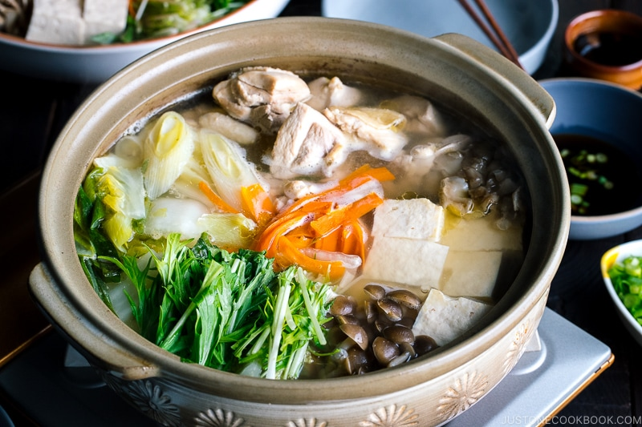

Mizutaki (chicken stew)
Recipe
Ingredients:
- 500g chicken thigh
- 1 pack of tofu
- 1 hakusai chinese cabbage
- 8 shiitake mushrooms
- 1 leek
- 1 carrot
- perilla leaves to serve (optional)
- 1 sachet dashi soup stock
- ponzu citrus seasoned soy sauce dipping sauce, to taste
Instructions:
- Start by cutting up the chicken into small bite-size pieces: Slice 1 pack of tofu into small cubes. Cut 500g chicken into bite-size pieces. Slice up 1 cabbage into bite-size pieces. Remove the stems from 8 shiitake mushrooms. Cut 1 leek and 1 carrot into thin rounds.
- Prepare the dashi soup: Mix 1 sachet dashi soup stock powder with 1L hot water and taste the dashi.
- Start heating the dashi soup stock on the stove and add the chicken: Remove any foam or impurities that rise to the surface of the liquid. Turn the heat down after boiling and allow the chicken to simmer
- Add the other ingredients to the pot and simmer them until soft and fully cooked: In separate small serving bowls, add a little ponzu sauce and then dip the cooked ingredients in the ponzu before eating. Add some perilla leaves if you would like before serving.
Tips:
- Ponzu is a mix of yuzu citrus juice and soy sauce which has a sharp, tangy taste. This sauce works wonders with a variety of dishes, but is also perfect for mizutaki.
- Eating together around a table is what makes these nabe dishes so popular. So dust off that old camping stove and sit around the table to enjoy this great meal together with your friends.
- You can use other types of Japanese mushrooms such as enoki mushrooms and/or shimeji mushrooms and also harusame or shirataki noodles work well.
- If you're using dried shiitake, soak them in hot water until preferred softness.